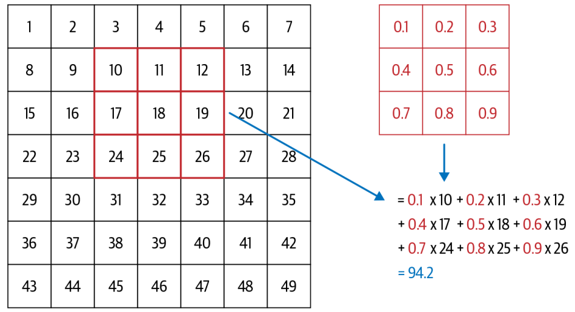
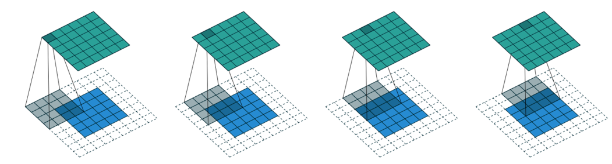

| 0 | 1 | 2 | 3 | 4 | 5 | 6 | 7 | 8 | 9 | 10 | 11 | 12 | 13 | 14 | 15 | 16 | 17 | 18 | 19 | 20 | 21 | 22 | 23 | 24 | 25 | 26 | 27 | |
|---|---|---|---|---|---|---|---|---|---|---|---|---|---|---|---|---|---|---|---|---|---|---|---|---|---|---|---|---|
| 0 | 0 | 0 | 0 | 0 | 0 | 0 | 0 | 0 | 0 | 0 | 0 | 0 | 0 | 0 | 0 | 0 | 0 | 0 | 0 | 0 | 0 | 0 | 0 | 0 | 0 | 0 | 0 | 0 |
| 1 | 0 | 0 | 0 | 0 | 0 | 0 | 0 | 0 | 0 | 0 | 0 | 0 | 0 | 0 | 0 | 0 | 0 | 0 | 0 | 0 | 0 | 0 | 0 | 0 | 0 | 0 | 0 | 0 |
| 2 | 0 | 0 | 0 | 0 | 0 | 0 | 0 | 0 | 0 | 0 | 0 | 0 | 0 | 0 | 0 | 0 | 0 | 0 | 0 | 0 | 0 | 0 | 0 | 0 | 0 | 0 | 0 | 0 |
| 3 | 0 | 0 | 0 | 0 | 0 | 0 | 0 | 0 | 0 | 0 | 0 | 0 | 0 | 0 | 0 | 0 | 0 | 0 | 0 | 0 | 0 | 0 | 0 | 0 | 0 | 0 | 0 | 0 |
| 4 | 0 | 0 | 0 | 0 | 0 | 0 | 0 | 0 | 0 | 0 | 0 | 0 | 0 | 0 | 0 | 0 | 0 | 0 | 0 | 0 | 0 | 0 | 0 | 0 | 0 | 0 | 0 | 0 |
| 5 | 0 | 0 | 0 | 12 | 99 | 91 | 142 | 155 | 246 | 182 | 155 | 155 | 155 | 155 | 131 | 52 | 0 | 0 | 0 | 0 | 0 | 0 | 0 | 0 | 0 | 0 | 0 | 0 |
| 6 | 0 | 0 | 0 | 138 | 254 | 254 | 254 | 254 | 254 | 254 | 254 | 254 | 254 | 254 | 254 | 252 | 210 | 122 | 33 | 0 | 0 | 0 | 0 | 0 | 0 | 0 | 0 | 0 |
| 7 | 0 | 0 | 0 | 220 | 254 | 254 | 254 | 235 | 189 | 189 | 189 | 189 | 150 | 189 | 205 | 254 | 254 | 254 | 75 | 0 | 0 | 0 | 0 | 0 | 0 | 0 | 0 | 0 |
| 8 | 0 | 0 | 0 | 35 | 74 | 35 | 35 | 25 | 0 | 0 | 0 | 0 | 0 | 0 | 13 | 224 | 254 | 254 | 153 | 0 | 0 | 0 | 0 | 0 | 0 | 0 | 0 | 0 |
| 9 | 0 | 0 | 0 | 0 | 0 | 0 | 0 | 0 | 0 | 0 | 0 | 0 | 0 | 0 | 90 | 254 | 254 | 247 | 53 | 0 | 0 | 0 | 0 | 0 | 0 | 0 | 0 | 0 |
Overview
In this blog post, we will explore the architecture of Convolution Neural Networks (CNN) and how they have been used to achieve state-of-the-art performance in image recognition tasks. We will also discuss some of the key components of CNNs, such as convolution layers, pooling layers, and activation functions. Finally, we will look at one of the most popular CNN architectures: ResNet.
Overview of Convolution Neural Networks (CNN)
In the context of computer vision, feature engineering is the process of using domain knowledge to extract distinctive attributes from images that can be used to improve the performance of machine learning algorithms. For instance, in image classification tasks, the number 7 is characterized by a horizontal edge near the top, and a diagonal line that goes down to the right. These features can be used to distinguish the number 7 from other digits.
It turns out that finding the edges in an image is a crucial step in computer vision tasks. To achieve this, we can use a technique called convolution. Convolution is a mathematical operation that takes two inputs: an image and a filter (also known as a kernel). The filter is a small matrix that is used to scan the image and extract features. For example, the following filter can be used to detect horizontal edges in an image.
Convolution Layer
A convolution layer applies a set of filters (i.e., kernel) to the input image to extract features. Each filter/kernel is a small matrix that is used to scan the image and extract features. The output of a convolution layer is a set of feature maps, which are the result of applying each filter to the input image.

As illustrated in Figure Figure 1, a 3x3 matrix kernel is applied to the input image, which is 7x7 grid. The kernel is applied to each pixel in the image, and the output is a new pixel value that is calculated by taking the dot product of the kernel and the corresponding pixels in the image. This process is repeated for each pixel in the image, resulting in a new feature map.
Let’s take another look at how convolution works in practice. We will use the im3 image, which is a 28x28 grayscale image of the digit 3 from the MNIST dataset. We will apply a 3x3 kernel to the image to extract features.
Let’s define a kernel that detects horizontal edges in the image. The kernel is a 3x3 matrix with values that are designed to highlight horizontal edges.
Code
kernel = tensor([[-1., -1., -1.],
[ 0., 0., 0.],
[ 1., 1., 1.]]).float()This kernel will detect horizontal edges in the image by emphasizing the differences between the pixel values in the top and bottom rows of the kernel, we can also change the kernel to have the row of 1s at the top and -1s at the bottom, we can detect horizontal edges that go from dark to light, putting 1s and -1s in columns versus rows give us filters that detect vertical edges.
Code
def apply_kernel(row, col, kernel):
return (im3_t[row-1:row+2,col-1:col+2] * kernel).sum()For a more in-depth guide to convolution arithmetic, see Dumoulin and Visin (2016).
Strides and Padding
With convolution arithmetic, the kernel is applied to each pixel in the image, resulting in a new feature map that the dimensions are smaller than the original image. This is because the kernel cannot be applied to the pixels at the edges of the image. To address this issue, we can use two techniques: strides and padding.
Strides refer to the number of pixels by which we move the kernel across the image. By default, the stride is set to 1, meaning we move the kernel one pixel at a time. However, we can increase the stride to reduce the size of the output feature map. For example, if we set the stride to 2, the kernel will move two pixels at a time, resulting in a smaller output feature map.
Padding involves adding extra pixels around the edges of the image before applying the kernel. This allows us to preserve the spatial dimensions of the input image in the output feature map. There are different types of padding, such as zero-padding (adding zeros) and reflection padding (adding a mirror image of the border pixels).

As illustrated in Figure 2, a 5x5 input image is padded with a 2-pixel border of zeros, resulting in a 7x7 padded image. A 4x4 kernel is then applied to the padded image with a stride of 1, resulting in a 5x5 output feature map.
In general, if we add a kernel of size \(ks \times ks\) (\(ks\) is an odd number) to an input image of size \(n \times n\), the neccessary padding \(p\) to preserve the spatial dimensions of the input image in the output feature map is given by: \[ p = ks//2 \] When \(ks\) is even, we can use asymmetric padding, for example, if \(ks=4\), we can use \(p=(ks//2, ks//2-1)\).
Furthermore, if we apply the kernel with a stride of \(s\), the output feature map will have dimensions: \[ \text{output size} = (n + 2p - ks)//(s) + 1 \]
Create a Convolution Layer with PyTorch
We can create a convolution layer using PyTorch’s nn.Conv2d class. The nn.Conv2d class takes several parameters, including the number of input channels, the number of output channels, the kernel size, the stride, and the padding.
In this example, we create a convolution layer with 1 input channel (grayscale image), 30 output channels (feature maps), a kernel size of 3x3, a stride of 1, and padding of 1. We also apply the ReLU activation function after the first convolution layer. One interesting property to note here is that we do not need to specify the input size when creating the convolution layer because a convolution is applied over each pixel automatically.
When creating cnn as above, we see that the output shape is the same as the input shape, which is (28, 28) (This is because we have used padding to preserve the spatial dimensions of the input image in the output feature map). It is not interesting for classification task since we need only single output activation per input image.
To deal with this, we can use several stride-2 convolution layers to reduce the spatial dimensions of the input image in the output feature map. For example, we can use two stride-2 convolution layers to reduce the spatial dimensions of the input image from (28, 28) to (7, 7), (4x4), (2x2) and then 1.
Code
def conv(ni, nf, ks=3, act=True):
res = nn.Conv2d(ni, nf, stride=2, kernel_size=ks, padding=ks//2)
if act: res = nn.Sequential(res, nn.ReLU())
return resThen, a simple cnn can be defined as follows:
Code
simple_cnn = sequential(
conv(1, 4), # Input: 28x28 -> Output: 14x14
conv(4, 8), # Input: 14x14 -> Output: 7x7
conv(8, 16), # Input: 7x7 -> Output: 4x4
conv(16, 32), # Input: 4x4 -> Output: 2x2
conv(32, 2, act=False), # Input: 2x2 -> Output: 1x1
Flatten()
)Our Leaner which is built from simple_cnn and dataset dls can be given as follows:
Code
learn = Learner(dls, simple_cnn, loss_func=F.cross_entropy, metrics=accuracy)
learn.summary()Sequential (Input shape: 64 x 1 x 28 x 28)
============================================================================
Layer (type) Output Shape Param # Trainable
============================================================================
64 x 4 x 14 x 14
Conv2d 40 True
ReLU
____________________________________________________________________________
64 x 8 x 7 x 7
Conv2d 296 True
ReLU
____________________________________________________________________________
64 x 16 x 4 x 4
Conv2d 1168 True
ReLU
____________________________________________________________________________
64 x 32 x 2 x 2
Conv2d 4640 True
ReLU
____________________________________________________________________________
64 x 2 x 1 x 1
Conv2d 578 True
____________________________________________________________________________
64 x 2
Flatten
____________________________________________________________________________
Total params: 6,722
Total trainable params: 6,722
Total non-trainable params: 0
Optimizer used: <function Adam at 0x7f02af32d9e0>
Loss function: <function cross_entropy at 0x7f0337dc5080>
Callbacks:
- TrainEvalCallback
- CastToTensor
- Recorder
- ProgressCallbackAs we can see, the output of the final Conv2D layer is 64x2x1x1, that’s why we need to flatten it before passing it to the final classification layer.
Afterwards, let’s train the model with low learning rate and more epochs to see how well it performs.
Code
learn.fit_one_cycle(2, 1e-2)| epoch | train_loss | valid_loss | accuracy | time |
|---|---|---|---|---|
| 0 | 0.067613 | 0.053133 | 0.982336 | 00:01 |
| 1 | 0.023864 | 0.029960 | 0.988714 | 00:01 |
Impressive, we are able to achieve over 99% accuracy on the classification task with MNIST dataset using simple CNN architecture (built from scratch).
Improving Training Stability
Increase Batch Size
Learning Rate Finder
Batch Normalization
Residual Networks (ResNet)
Conclusions
Dumoulin, Vincent, and Francesco Visin. 2016. “A Guide to Convolution Arithmetic for Deep Learning.” https://arxiv.org/abs/1603.07285.